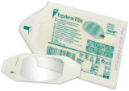

| Consent form |
 |
For explaining the procedure, risks, and benefits to the patient and getting their permission to proceed. |
| Timeout Sheet |
|
A checklist for doing timout. |
| Chucks pad |
 |
Put this under the abscess in case of bleeding. |
| Alcohol Prep Pads x 4 |
 |
For cleaning off any blood after the procedure. |
| Chloraprep |
 |
For cleaning the skin prior to cutting. |
| Lidocaine 1-2% without epinephrine (5 mL) |
 |
For numbing the area of interest |
| 5 mL Syringe |
 |
For injecting lidocaine. |
| 18 gauge needle |
 |
For drawing up lidocaine into the syringe. Do not let the patient see this needle. |
| 25 to 27.5 gauge needle |
 |
A small and friendly needle for injecting lidocaine. |
| Sterile Gloves |
 |
Get the appropriate size for the provider. |
| x4 Sterile Gauze, 2" x 2" |
 |
For bandaging the wound, holding pressure, and cleaning the wound. |
| Saline flush x 3 |
 |
For flushing the wound |
| #11 Blade |
|
For cutting the skin. |
| Curved Hemostat |
 |
For breaking up loculations in the abscess. |
| Iodoform Gauze |
|
For packing deep pockets, 1/4"-1/2" width ribbon is most common. Not always necessary |
| Tegaderm |
 |
A flexible seal that keeps the gauze over the wound. Band-Aids are OK too in a pinch. |